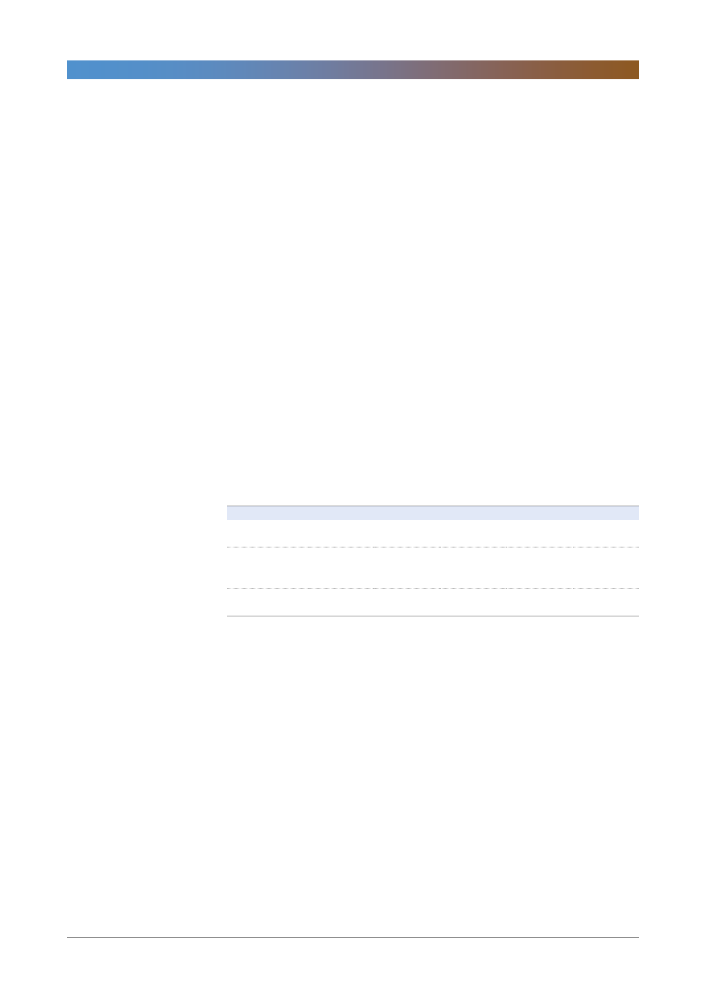

오리온(271560)
- 1월에 지역 합산 매출액 2,464억원, 영업이익 511억원을 달성해 지난해 1분
기 실적(매출액 5,163억원, 영업이익 936억원)의 절반 정도를 달성함
- 2월 이후에는 중국, 베트남의 매출액이 1월보다 줄어들 것으로 예상되나 전년
동월대비 개선 흐름은 이어져 1분기에 전년동기대비 실적 개선 가능성이 높은
듯
중국 peer 주가 반등, 중국 외형 회복 지속 시 주가 레벨업 예상
- 최근 중국의 제과 peer들의 주가가 예상대로 바닥에서 반등했고, 이는 동사의
주가 상승에 보탬이 될 듯
- 경기 부진 우려에도 불구하고 중국 파이와 스낵시장은 4분기에도 3분기와 유
사하게 전년동기대비 각각 3%, 9% 이상의 증가세를 이어갔음
- 어린이 소비가 많은 기호 식품인 제과는 식품시장 안에서도 경기와 수요 상관
성이 가장 약한 카테고리임
- 지난 수개월의 수익성 개선 흐름이 구조조정의 효과를 증명하고 있고, 이번 달
과 같이 앞으로는 중국의 수요도 견조한 흐름을 이어갈 것으로 보여 주가 회
복 가능성이 높다고 판단
- 2019년 예상 PER은 19.8배로 peer 그룹 평균인 18.6배와 큰 차이가 없어
상대적으로 강한 영업 모멘텀이 전혀 반영되어 있지 않음
<표 1> Peer 그룹 PER 비교
(단위: 원, 배)
오리온
EPS
PER(A)
중국 제과
PER(B)
세계 제과(중국 제외) PER(C)
PER(B 와 C 평균)
PER 프리미엄
A/B-1
A/C-1
2017
1,912
54.7
18.6
21.0
19.8
2018P
4,509
24.8
19.9
19.7
19.8
24.6%
25.9%
2019F
5,657
19.8
18.6
18.6
18.6
6.2%
6.7%
2020F
6,441
17.4
17.3
17.7
17.5
0.8%
(1.7%)
주: 1. 중국 제과는 Want Want, Tingyi, 세계 제과는 Pepsi, Wrigley, Hershey, MEIJI, Ezaki, Kraft 등, 2. 2월 22일 종가 기준
자료: Bloomberg, 한국투자증권
2